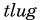
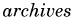

/
/
Coming/Recent Events
Technical Meeting
Saturday July 11th, 2026, 13:00~16:00 Axsh, Kitasando-R. Bldg 1F, 3-24-8, Sendagaya, Shibuya-ku, Tokyo [ more info ] [ Location ] [ Directions(Google) ]
About TLUG
The Tokyo Linux Users Group grew out of the creative energies of some of Japan’s Internet pioneers. They recognized the significance of Linux and within months held the first official meeting in September of 1994.
On June 16, 1994 TLUG was born as the “LINUX” conference on TWICS, which was the only public access Internet Service Provider in Japan at that time. The atmosphere was exciting and friendly, and everyone began helping each other fix problems and learn about Linux. One of the early members commented, “It felt like we were all on the edge of this frontier and that together we were taming this networked, high-tech jungle. It was great!”
“It felt like we were all on the edge of this frontier and that together we were taming this networked, high-tech jungle.”
TLUG is a non-profit users group, whose members exchange information on the development and use of the Linux kernel and Free Software Foundation tools. Physical and online meetings are held in English and Japanese. All are welcome.
Meetings
Meeting times and places are announced on the mailing list and on the TLUG meeting page. Take a look at what happened at earlier meetings and parties.
[ Next Meeting | Past Meetings ]
Members
TLUG is made up of members from all over the world. Please see the links below to get to know some of them.
[ Administrative Members | Other Members ]
Multilingualization
If you’re looking for information about multilingualization on Linux with Japanese, or Linux shops in Japan, you’ve come to the right place. Have a look at our documents on multilingualization/Linux in Japan.
[ Documents | Linux in Japan ]
Get Involved
If you are interested in TLUG, we strongly recommend you to join the group, either at a meeting or online. You can read the archives of both main and admin mailing lists. Please note that the admin list requires the following username and password:

/
[ Subscribe/Unsubscribe | List Policy | Archives (Main) | Archives (Admin) ]